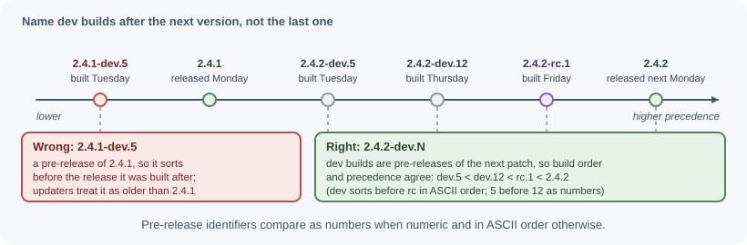

Versioning Patterns¶
A product does not have one version; it has many. The TaskFlow API image, the public API contract, the database schema, the events on the message bus, the shared npm packages, the Helm chart, and every desktop and mobile build each carry their own number, and each number is read by a different audience asking a different question. Getting these identifiers right is what lets you answer "what exactly is running, and is it compatible with that?" in seconds.
This lesson covers what gets a version and why the schemes differ; SemVer, CalVer, build numbers, Git SHAs, and monotonic build IDs, and how to combine them in one string; store version codes versus display versions; embedding the version in every artifact; one version for the whole product versus one per component; and when to bump what. SemVer rules, Git tags, and changelog automation are covered in versioning, tags, and releases; this page builds on them.
Why it matters¶
- Incidents start with "which version?" If the API, the web bundle, and the crash reports all name their versions consistently, you can match a spike of errors to one build in a minute. If they do not, the first hour of the incident is archaeology.
- Compatibility decisions need comparable numbers. A minimum supported client version, an updater deciding whether 1.10.0 is newer than 1.9.0, and a migration tool deciding which scripts to run all depend on versions that sort correctly.
- Stores and operating systems enforce rules. Google Play rejects a reused version code, Android refuses to install a lower version code over a higher one, and App Store Connect identifies a build by its version and build string. A careless scheme can block a release on the day you need it.
- Dashboards group by release. Crash-free rates, error budgets, and canary comparisons are only meaningful when every build has a distinct, correctly formatted release name.
Real-world usage¶
- Android version codes. Android's
versioning guide
defines
versionCodeas a positive integer used to decide which build is newer, used by the system to block downgrades, never reusable on Google Play, and capped at 2,100,000,000;versionNameis the string shown to users and is not used for comparisons. - Apple bundle versions. Apple documents CFBundleShortVersionString as the user-visible release version (three period-separated integers) and CFBundleVersion as the build version (one to three integers). App Store Connect's app information reference says a build is uniquely identified by the bundle ID, version number, and build string together.
- Chromium. The Chromium project's version numbers page explains its four-part MAJOR.MINOR.BUILD.PATCH scheme: BUILD is an ever-increasing number for a point on the trunk, PATCH increases on a branch, and MAJOR and MINOR reflect scheduling and marketing decisions rather than the code itself.
- Microsoft Store. The MSIX app package requirements require four-part versions whose sections are integers from 0 to 65535, with the fourth section reserved for the Store and left at 0.
- Sentry release names. Sentry's
naming releases
guide recommends
package@versionorpackage@version+build, and forbids slashes, newlines, and names over 200 characters.
Popular tools and providers: the semver npm package, git describe,
release-please, semantic-release, Changesets, docker/metadata-action,
Gradle's versionCode and versionName, Xcode's agvtool, and the
release features of Sentry and other error trackers.
How it works¶
What gets a version, and why the schemes differ¶
Each versioned thing has a different consumer, and the number exists to answer that consumer's question.
| Thing | Who reads the version | The question it answers | Typical scheme |
|---|---|---|---|
Library or SDK (@example/taskflow-sdk) |
Other developers' package managers | Is upgrading safe? | SemVer |
| Public HTTP API | Client developers | Which contract am I calling? | A major version in the path (/v2) or a dated version (2026-11-01) |
| Service build (TaskFlow API image) | Deploy pipeline, on-call engineers | Exactly which build is this? | Commit SHA and image digest, optionally a SemVer or CalVer label |
| Database schema | Migration tool, the app at startup | Which migrations have run, in what order? | A monotonic migration ID (sequence or timestamp) |
| Events and messages | Consumers on the bus | Which payload shape is this? | A version per event type, or a schema registry ID |
| Infrastructure modules (Helm charts, Terraform modules) | Other teams' configuration | Is upgrading safe? | SemVer (a Helm chart has a chart version and a separate appVersion) |
| Desktop and mobile builds | Users, stores, update servers | What do I call it, and is it newer? | A display version plus a strictly increasing build number |
| Web bundle | Browsers and CDNs | Which files belong together? | Content hashes in file names plus a build ID |
The mistake to avoid is forcing one scheme onto everything. SemVer on a database schema says nothing useful, and a commit SHA on a public SDK tells consumers nothing about compatibility.
Version identifiers compared¶
| Identifier | Example | Orders builds? | Unique? | Signals compatibility? | Generated by |
|---|---|---|---|---|---|
| SemVer | 2.4.1 |
Yes, by precedence rules | Only if never reused | Yes | People, or tools reading Conventional Commits |
| CalVer | 2026.11.2 |
Yes | With a counter segment | No | The release date |
| CI run number | 873 |
Within one workflow | Within one workflow | No | The CI system |
| Commit SHA | 3f2a1c9 |
No | Yes | No | Git |
git describe |
v2.4.1-5-g3f2a1c9 |
Relative to the last tag | Yes | No | Git |
| Content digest | sha256:9f2c... |
No | Yes | No | The registry or build tool |
Three properties matter, and no single identifier has all of them: ordering (is this newer?), identity (exactly which bits?), and meaning (is it compatible?). That is why mature pipelines record several identifiers for every build and combine them where one string is needed.
Combining identifiers in one string¶
SemVer leaves room for this: a pre-release after a hyphen, and build metadata after a plus sign.
![Diagram: the string 2.4.1-rc.2+build.873.g3f2a1c split into four parts: the version core 2.4.1 (MAJOR.MINOR.PATCH, the compatibility promise), the pre-release -rc.2 (not final; sorts before 2.4.1, and rc.2 before rc.10 because numbers compare numerically), the build number build.873 (the CI run that produced it), and g3f2a1c (g plus the short commit SHA, the git describe convention, identifying the source); a bracket over the build number and commit notes that build metadata is ignored when comparing precedence, so 2.4.1+build.873 and 2.4.1+build.874 have equal precedence.](../version-string-anatomy.svg)
Two consequences follow from the SemVer rules:
- Build metadata does not order builds.
2.4.1+build.873and2.4.1+build.874have equal precedence, so an updater that compares SemVer will not treat the second as newer. If two builds can both be "the latest", they need different version cores or pre-release parts, not just different metadata. - Some systems reject or drop the plus sign. Docker tags allow only
letters, digits,
_,., and-, so you tag the image2.4.1and keep the full string in a label or environment variable. Thesemvernpm package'svalid()returns2.4.1for2.4.1+build.873, silently dropping the metadata.
Development builds between releases need care. A build made on Tuesday
after 2.4.1 shipped on Monday must sort after 2.4.1. Naming it
2.4.1-dev.5 gets that wrong, because a pre-release sorts before its
release:

The fix is to name development builds as pre-releases of the next
version: 2.4.2-dev.5, where 5 is the number of commits since the
v2.4.1 tag. Precedence then matches build order all the way to the
release:
2.4.1 < 2.4.2-dev.5 < 2.4.2-dev.12 < 2.4.2-rc.1 < 2.4.2
Monotonic build numbers¶
Stores, update servers, and some operating systems compare builds with a single integer that must only ever increase. Common sources and their traps:
| Source | Monotonic? | Trap |
|---|---|---|
CI run number (github.run_number) |
Within one workflow | Moving the build to a different workflow or CI system starts again at 1; add a fixed offset when you migrate |
Commit count (git rev-list --count HEAD) |
On one branch | Differs between branches, and a shallow clone (fetch-depth: 1) counts 1 |
Timestamp (YYYYMMDDHH) |
Yes, if builds are not parallel | Two builds in the same hour collide; long formats overflow store limits |
Derived from SemVer (major*1000000 + minor*10000 + patch*100 + n) |
Yes, while parts stay under their caps | A minor version above 99 breaks the encoding |
| A counter in a database or build service | Yes | One more service to keep available |
Limits turn this into arithmetic. Google Play allows version codes up to 2,100,000,000:
YYYYMMDDHH 2026111310 = 2,026,111,310 fits, until the year 2100
YYMMDDHHmm 2611131042 = 2,611,131,042 too large: the upload is rejected
SemVer-based 3.2.0 build 1 -> 3*1,000,000 + 2*10,000 + 0*100 + 1 = 3,020,001
MSIX sections are smaller still: each of the first three must be between
0 and 65535 (and the first cannot be 0), so 20261113 cannot be a
section. A Windows build usually puts a counter in the third section,
for example 1.9.873.0.
Whatever source you choose, it must never go backwards. Android blocks installing a lower version code over a higher one, so a scheme change must start above the largest code ever shipped.
Store version codes versus display versions¶
Every client platform separates the name users see from the number machines compare.
| Platform | Display version | Build number | Rules for the build number |
|---|---|---|---|
| Android | versionName, any string (3.2.0) |
versionCode, an integer (30200) |
Positive, at most 2,100,000,000, never reused on Google Play; the system blocks downgrades |
| iOS and macOS | CFBundleShortVersionString, three integers (3.2.0) |
CFBundleVersion, one to three integers (412) |
A build is identified by bundle ID, version, and build string, so each upload of a version needs a new build string |
| Windows (MSIX) | Your marketing name | Package version Major.Minor.Build.Revision |
Sections 0 to 65535, fourth section 0 for the Store; the Store serves the highest applicable version |
| Directly distributed desktop (Tauri, Electron) | The app version (1.9.1) |
Usually the same SemVer string | The updater compares SemVer, so pre-release and metadata rules apply |
Keep the display version meaningful for people and let CI own the build number. Humans should never type a build number into a project file.
Embedding the version in every artifact¶
Compute the version once, early in the pipeline, and pass the same values
to every later step. Never compute it at runtime from a Git checkout:
production containers have no .git directory.
![Diagram: the Git commit 3f2a1c9 with tag v2.4.1 and CI run 873 feed one CI step, scripts/version.mjs, which computes version 2.4.1 and the full string 2.4.1+build.873.g3f2a1c once; arrows fan out to the container image (tags 2.4.1 and sha-3f2a1c9, OCI version and revision labels), the running API (GET /version, the X-App-Version header, the OpenTelemetry service.version attribute), the web bundle (an __APP_VERSION__ build-time define and /version.json), and error tracking and the deploy record (release taskflow-api@2.4.1+build.873.g3f2a1c); a lower panel lists identifiers versioned on their own schedule: API contract v2, schema migration 0042, event task.assigned v2, and store build numbers.](../artifact-version-map.svg)
| Where | How | Who reads it |
|---|---|---|
| Container image | Tags (2.4.1, sha-<commit>), OCI labels org.opencontainers.image.version and .revision, the digest |
Deploy tools, registry users, scanners |
| Running service | GET /version, an X-App-Version response header, a startup log line, the OpenTelemetry service.version resource attribute |
On-call engineers, clients, dashboards |
| Web bundle | A build-time define (__APP_VERSION__) or a VITE_APP_VERSION variable, plus a version.json file served with no-cache |
The app itself, support staff, update prompts |
| Error tracking | The release name, for example taskflow-api@2.4.1+build.873.g3f2a1c |
Crash and regression analysis |
| Deployment record | Version, commit, digest, environment, time | Audits, DORA metrics, rollback |
A version header on every response looks redundant, but it pays off: in
the browser's network panel anyone can see which server version answered
a failing request, and a client can notice that the server changed
underneath it (the next lesson uses this). The GET /version endpoint
and image labels are shown in
versioning, tags, and releases,
and service.version in
distributed tracing.
One version for the product, or one per component¶
| One product version | One version per component | |
|---|---|---|
| Example | "TaskFlow 2026.11" for API, web, and desktop together | API 2.4.1, web build 873, desktop 1.9.1 |
| Communication | Simple for customers and support | Needs a mapping to say what shipped together |
| Releases | Every component gets a new version even if unchanged, or the version lies | Each component releases when it changes |
| Fits | On-premises bundles, desktop apps with an embedded server, a monorepo with one deployable | Independently deployed services and clients |
Most products that deploy continuously use a hybrid: each component keeps its own version for machines, and a product release name (often CalVer) points to a manifest of component versions for humans, like the manifest on the release engineering overview. Large platforms publish the compatibility rules between their components' versions; Kubernetes's version skew policy is a good model.
When to bump what¶
| Change | App or service version | API version | Schema version | Event version | Client build number |
|---|---|---|---|---|---|
| Bug fix in a handler | Patch | No | No | No | (new client build: +1) |
| New optional response field | Minor | No, it is additive | Only if stored | No | |
| Renamed or removed response field | Major for SDKs | New API version, or expand and contract within one | Expand first | ||
| New column for a feature | Minor | No | New migration | ||
| Breaking change to an event payload | Minor or major | New event version, published alongside the old one | |||
| Any new client build uploaded to a store | Display version only when releasing | Always +1 |
The rule underneath the table: bump a version only for its own audience. An internal refactor does not change the API version; a new migration does not change the event version; and a build number changes on every build because the store, not a human, is its audience.
When to use and when not to use¶
| Situation | Use | Avoid |
|---|---|---|
| Public npm SDK or library | Strict SemVer, automated from commits | CalVer, or breaking changes in minor releases |
| Internal service deployed many times a day | Commit SHA and digest per build; SemVer or CalVer tags for milestones if humans need them | Inventing SemVer bumps that nobody reads |
| Public API | Major versions in the path, or dated versions in a header; additive changes without a bump | A new API version for every release |
| Database schema | Monotonic migration IDs | SemVer for migrations |
| Mobile app | SemVer or CalVer display version plus a CI-owned build number | Hand-edited build numbers |
| Desktop app with an updater | SemVer, because updaters compare it; dev builds as pre-releases of the next version | Build metadata as the only difference between builds |
| Product release shared with customers | CalVer release name pointing to a component manifest | One synthetic number bumped on every component change |
Practical examples¶
Compute every version once in CI¶
// scripts/version.mjs: compute every version identifier once, in CI
import { execFileSync } from "node:child_process";
import { appendFileSync, readFileSync } from "node:fs";
import semver from "semver";
const git = (...args) => execFileSync("git", args, { encoding: "utf8" }).trim();
const tryGit = (...args) => {
try {
return git(...args);
} catch {
return "";
}
};
const pkg = JSON.parse(readFileSync("package.json", "utf8")); // e.g. 2.4.1
const sha = git("rev-parse", "HEAD");
const build = process.env.GITHUB_RUN_NUMBER ?? "0";
// A commit tagged v<package version> is a release. Anything else is a
// pre-release of the NEXT patch, so it sorts after the last release.
const releaseTag = `v${pkg.version}`;
const tagsHere = tryGit("tag", "--points-at", "HEAD").split("\n");
let version = pkg.version;
if (!tagsHere.includes(releaseTag)) {
const since = tryGit("rev-list", "--count", `${releaseTag}..HEAD`) || "0";
version = `${semver.inc(pkg.version, "patch")}-dev.${since}`; // 2.4.2-dev.5
}
const out = {
version, // 2.4.1 or 2.4.2-dev.5
full: `${version}+build.${build}.g${sha.slice(0, 7)}`,
build,
sha,
};
console.log(out);
if (process.env.GITHUB_OUTPUT) {
const lines = Object.entries(out).map(([k, v]) => `${k}=${v}\n`).join("");
appendFileSync(process.env.GITHUB_OUTPUT, lines);
}
# .github/workflows/build.yml
name: build
on:
push:
branches: [main]
permissions:
contents: read
jobs:
version:
runs-on: ubuntu-latest
outputs:
version: ${{ steps.v.outputs.version }}
full: ${{ steps.v.outputs.full }}
sha: ${{ steps.v.outputs.sha }}
steps:
- uses: actions/checkout@v7
with:
fetch-depth: 0 # tags and history for rev-list
persist-credentials: false
- uses: actions/setup-node@v7
with:
node-version: 24
cache: npm
- run: npm ci
- id: v
run: node scripts/version.mjs
image:
needs: version
runs-on: ubuntu-latest
permissions:
contents: read
packages: write
steps:
- uses: actions/checkout@v7
with:
persist-credentials: false
- uses: docker/setup-buildx-action@v4
- uses: docker/login-action@v4
with:
registry: ghcr.io
username: ${{ github.actor }}
password: ${{ secrets.GITHUB_TOKEN }}
- uses: docker/build-push-action@v7
with:
context: .
push: true
build-args: |
VERSION=${{ needs.version.outputs.full }}
GIT_SHA=${{ needs.version.outputs.sha }}
tags: |
ghcr.io/example/taskflow-api:${{ needs.version.outputs.version }}
ghcr.io/example/taskflow-api:sha-${{ needs.version.outputs.sha }}
fetch-depth: 0matters: with the default shallow clone the release tag is missing, the count falls back to 0, and every dev build would be2.4.2-dev.0.- The image tags use
version(no+), and the full string with build metadata travels as theVERSIONbuild argument, which the Dockerfile in versioning, tags, and releases turns into theAPP_VERSIONenvironment variable and the OCI version and revision labels. Setting labels in one place avoids two sources disagreeing. - The version is computed in one job and consumed by the others through job outputs, so every artifact of this run carries identical values.
Stamp the version into responses, traces, and the web bundle¶
// src/middleware/version-header.js
const VERSION = process.env.APP_VERSION ?? "dev";
export function versionHeader(req, res, next) {
res.set("X-App-Version", VERSION); // visible in every response
next();
}
// src/app.js (excerpt)
// app.use(versionHeader);
# Dockerfile (excerpt): one source for the version inside the container
ARG VERSION=dev
ENV APP_VERSION=$VERSION \
OTEL_SERVICE_NAME=taskflow-api \
OTEL_RESOURCE_ATTRIBUTES=service.version=$VERSION
OTEL_SERVICE_NAME and OTEL_RESOURCE_ATTRIBUTES are standard
OpenTelemetry SDK variables, so every span, metric, and log the API
exports carries service.version without code changes. (If the platform
also sets OTEL_RESOURCE_ATTRIBUTES, merge the values instead of
overwriting them.)
// vite.config.js: TaskFlow Web
import { defineConfig } from "vite";
import react from "@vitejs/plugin-react";
const version = process.env.APP_VERSION ?? "dev";
export default defineConfig({
plugins: [
react(),
{
name: "emit-version-json",
apply: "build",
generateBundle() {
// dist/version.json: served with Cache-Control: no-cache
this.emitFile({
type: "asset",
fileName: "version.json",
source: JSON.stringify({ version, builtAt: new Date().toISOString() }),
});
},
},
],
define: {
__APP_VERSION__: JSON.stringify(version), // replaced in the code at build time
},
});
The app reads __APP_VERSION__ (declare it in a .d.ts file for
TypeScript) for its own release name, and the deployed version.json
tells an open tab whether a newer build exists, which the next lesson
uses for "new version available" prompts.
Set store build numbers from CI¶
#!/usr/bin/env bash
# scripts/set-ios-version.sh: run in CI before archiving the iOS app
set -euo pipefail
cd ios
xcrun agvtool new-marketing-version "$APP_VERSION" # CFBundleShortVersionString, e.g. 3.2.0
xcrun agvtool new-version -all "$BUILD_NUMBER" # CFBundleVersion, e.g. 412
agvtool requires the project's versioning system to be set to Apple
Generic. On Android, read both values from the environment in the Gradle
build so that CI, not a person, owns them:
// app/build.gradle.kts (excerpt)
android {
defaultConfig {
versionName = providers.environmentVariable("APP_VERSION").getOrElse("0.0.1-dev")
versionCode = providers.environmentVariable("VERSION_CODE").map { it.toInt() }.getOrElse(1)
}
}
# In the Android job: an offset keeps codes above those from the old CI system
export VERSION_CODE=$(( 30000 + GITHUB_RUN_NUMBER ))
Compare versions correctly¶
// scripts/compare-versions.mjs
import semver from "semver";
const versions = ["1.10.0", "1.9.0", "1.9.0-rc.2", "1.9.0-rc.10", "2.0.0-dev.3"];
console.log([...versions].sort());
// [ '1.10.0', '1.9.0', '1.9.0-rc.10', '1.9.0-rc.2', '2.0.0-dev.3' ] string order: wrong
console.log([...versions].sort(semver.compare));
// [ '1.9.0-rc.2', '1.9.0-rc.10', '1.9.0', '1.10.0', '2.0.0-dev.3' ] precedence order
semver.gt("1.10.0", "1.9.0"); // true
semver.compare("2.4.1+build.873", "2.4.1+build.874"); // 0: metadata ignored
semver.compareBuild("2.4.1+build.873", "2.4.1+build.874"); // -1: metadata compared
semver.satisfies("2.4.2-dev.5", ">=2.4.1"); // false: pre-releases excluded
semver.satisfies("2.4.2-dev.5", ">=2.4.1", { includePrerelease: true }); // true
// Store build numbers are integers: compare them as numbers, never as strings
Number("1000") > Number("412"); // true ("1000" > "412" is false)
The satisfies behaviour surprises people: by default a range only
matches pre-releases of the same major.minor.patch, so a dev build will
not satisfy a minimum-version range unless you opt in.
Best practices¶
- Give each versioned thing the scheme its consumer needs; do not force SemVer onto schemas or SHAs onto SDKs.
- Compute versions once per pipeline run and pass them along as outputs; never recompute them in later jobs or at runtime.
- Name development builds as pre-releases of the next version so precedence follows build order.
- Let CI own build numbers, make them strictly increasing, and plan for store limits before you need them.
- Stamp the version into image labels, a response header, telemetry resource attributes, error-tracking release names, and the web bundle.
- Compare versions with a SemVer library and build numbers as integers.
- Keep product release names (CalVer) separate from component versions, and link them with a release manifest.
In production¶
- The store rejects the upload on release day. Detect: the Play Console refuses the bundle because the version code was already used, or App Store Connect rejects a duplicate build string. Cause: a build number typed by hand, or a pipeline rerun that rebuilt with the same number. Fix: derive the number from CI, add an offset if it ever went backwards, and treat every upload as a new build.
- The updater never offers 1.10.0.
Detect: installs stay on 1.9.x after a release; update-check logs show
"no update" for 1.9.4. Cause: versions compared as strings, so
"1.10.0" < "1.9.4". Fix: compare with a SemVer library and add a unit test with a two-digit minor version. - Development builds look older than the release before them.
Detect: beta-channel users are offered 2.4.1 again after installing a
later dev build. Cause: dev builds named
2.4.1-dev.N, which sort before 2.4.1. Fix: name them2.4.2-dev.N, a pre-release of the next patch. /versionsaysdevin production. Detect: the endpoint, the header, and error reports showdevorunknown. Cause: the build argument was not passed, or the version was read from a Git checkout that does not exist in the container. Fix: pass the computed version as a build argument, and fail the pipeline if the built image reportsdev.- Crash reports mix two different builds under one release.
Detect: a "regression" that appears to come and go within one
release; symbol uploads overwrite each other. Cause: the release name
omits the build number, so a rebuild reused it. Fix: use
package@version+buildnames and never rebuild a released version under the same name. - Every dev build gets the same version.
Detect: consecutive builds are all
2.4.2-dev.0(or-dev.1); image tags are overwritten. Cause: a shallow clone, so the release tag is missing and the commit count is 0 or 1. Fix:fetch-depth: 0, or fetch tags explicitly before computing.
Important terminology¶
- Version core: the
MAJOR.MINOR.PATCHpart of a SemVer string. - Pre-release: a hyphenated suffix (
-rc.2) that sorts before the release it belongs to. - Build metadata: a
+suffix that identifies a build but is ignored for precedence. - Precedence: SemVer's rules for ordering versions.
- Build number: a strictly increasing integer that identifies a build to stores, updaters, or operating systems.
- Display version: the human-facing version (
versionName,CFBundleShortVersionString). - Version code: Android's integer build number,
versionCode. - Monotonic: never decreasing; required for build numbers.
- Content digest: a hash of an artifact's content that identifies it exactly.
- Release name: the identifier an error tracker or deploy record uses
for a build, such as
taskflow-api@2.4.1+build.873. - Release manifest: a document that lists every component version in one product release.
Common mistakes and misconceptions¶
- Believing one version number can serve every audience.
- Using build metadata as the only difference between two builds and expecting tools to order them.
- Naming development builds after the last release instead of the next.
- Sorting versions as strings, or comparing build numbers as strings.
- Typing build numbers by hand, or letting them reset when CI changes.
- Computing the version at runtime from Git inside a container.
- Bumping the API version for internal changes, or not bumping it for a removed field.
- Encoding dates into build numbers without checking store limits.
Revision questions¶
- Which three properties can a version identifier have, and which identifiers provide each one?
- Why does
2.4.1+build.873not count as newer than2.4.1+build.872? - A build is made two days after
v2.4.1shipped. What version should it carry, and why not2.4.1-dev.7? - A team proposes Android version codes in
YYMMDDHHmmform. Calculate the code for 2026-11-13 10:42 and decide whether Google Play accepts it. (2,611,131,042 is above the 2,100,000,000 limit, so no.) - What are the display version and the build number on Android and iOS, and what rules apply to each build number?
- List four places the TaskFlow API version should appear at runtime, and who reads each one.
- When does one product version make sense, and when should each component be versioned separately?
- Why does
semver.satisfies("2.4.2-dev.5", ">=2.4.1")return false?